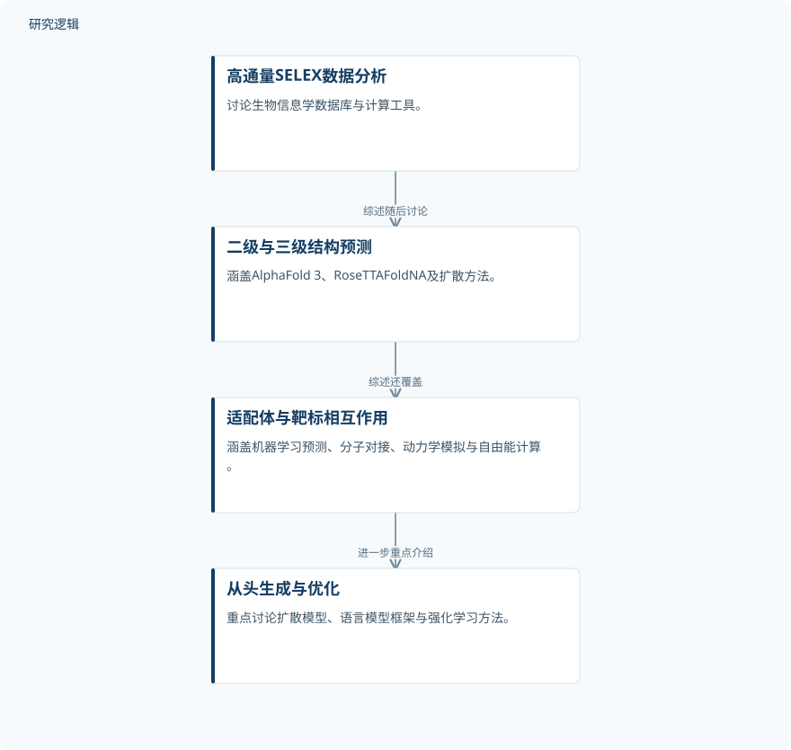

摘要解读
超越SELEX：人工智能驱动适配体从序列、结构到功能的开发
Beyond SELEX: AI-driven aptamers from sequence to structure to function.
解读更新 2026-11-10 13:54 · 依据公开摘要整理，未核验全文细节
适配体发现能否从反复筛选走向数据驱动的理性设计？这篇综述围绕序列、结构与功能，梳理人工智能介入适配体开发的主要环节，为理解生成式设计的作用与证据边界提供阅读入口。
文章目录
传统筛选的约束，推动设计思路转变
传统适配体发现依赖配体指数富集系统进化技术（SELEX），常受到文库容量有限、PCR偏倚以及多轮筛选的制约。摘要将人工智能与适配体开发的结合，概括为从经验筛选向理性、数据驱动设计的转变。
本文是一篇综述，重点关注2024–2026年报道的进展，并非报告单一模型或一组新实验。其阅读价值在于把分散的方法放回适配体开发全流程，而不是仅关注某个生成模型。
从筛选数据分析到结构与相互作用预测
综述首先讨论用于高通量SELEX数据分析的生物信息学数据库与计算工具，随后梳理二级、三级结构预测策略，包括AlphaFold 3、RoseTTAFoldNA及基于扩散的方法。
在适配体与靶标相互作用层面，摘要列出了机器学习预测、分子对接、动力学模拟和自由能计算。这些是综述覆盖的方法类别；摘要没有给出它们在某一统一工作流中的具体配置或衔接方式。
依据摘要整理的综述方法脉络


概括摘要明确列出的讨论顺序，不代表论文验证过的端到端实验流程，也不表示各方法必然串联使用。
下载 SVG图示关系说明
实线表示相邻阶段的信息流，虚线表示跨阶段联系或反馈。
高通量SELEX数据分析 → 二级与三级结构预测：综述随后讨论；二级与三级结构预测 → 适配体与靶标相互作用：综述还覆盖；适配体与靶标相互作用 → 从头生成与优化：进一步重点介绍
生成式设计成为重点，但不等于性能已获统一验证
摘要重点介绍用于适配体从头生成与优化的近期方法：扩散模型AptaDiff、基于语言模型的InstructNA和GRAPE-LM，以及强化学习方法AiDTA。这里报告的是综述关注的方法进展，不能据此认定某一路线优于其他路线。
综述还覆盖AI设计适配体在精准诊断、靶向治疗和生物传感中的新兴应用，并讨论面向转化开发的闭环、可解释AI框架。应用领域属于综述范围，闭环与可解释框架则被列为未来方向，不应写成本文已经验证的效果。
摘要无法回答样本规模与验证强度
仅凭摘要，无法判断所综述研究的数据规模、独立样本数量、靶标覆盖范围、训练与测试划分，以及不同方法是否经过可比条件下的评估。摘要也未提供定量性能结果或实验验证细节，因此不能据此判断泛化能力与实际转化成熟度；这些信息需要进一步查阅正文及原始研究。
阅读启发：沿着序列、结构与功能追问证据
阅读启发：对关注生成式设计与语言模型的读者，可进一步追问，模型生成的序列如何与结构预测、靶标相互作用判断及功能验证相联系？阅读正文时，宜区分计算预测、实验支持与应用展望，并关注作者如何讨论闭环反馈和可解释性，而非把生成候选本身视为功能成立的证明。
以上为本站阅读启发与建议，不是论文已验证的结论。